Створення тепломап
[ Download PDF
A4
Letter ]
Heatmaps are one of the best visualization tools for dense point data. Heatmaps
are used to easily identify find clusters where there is a high concentration
of activity. They are also useful for doing cluster analysis or hotspot
analysis.
Огляд завдання
We will work with a dataset of crime locations in Surrey, UK for the year 2011
and find crime hotspots in the county.
Додаткові навички
- How to perform HotSpot or Cluster analysis on dense point data.
Отримання даних
data.police.uk provides street-level crime,
outcome, and stop and search data in simple CSV format.
Download the data for Surrey Police and unzip
the downloaded archive to extract the CSV file.
Для зручності, ви можете безпосередньо завантажити копію набору даних за допомогою наведеного нижче посилання
2015-08-surrey-street.csv
Data Source [POLICEUK]
Виконання
- To start, we will import the CSV file into QGIS. (see
Імпортування електронних таблиць або CSV-файлів. for more details). Click
.
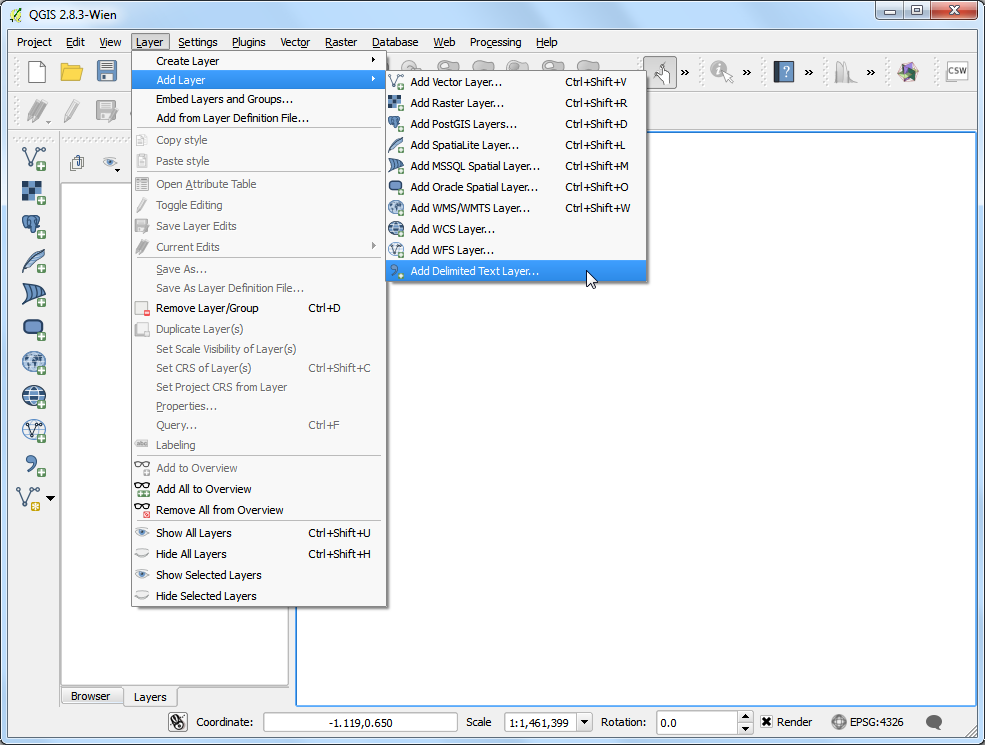
- Browse to the
2015-08-surrey-street.csv file on your computer and open
it. (Your filename maybe different if you downloaded a fresh copy of the
dataset). Select CSV (comma separated values) as the file
format. You will see the Longitude and Latitude columns automatically
selected as X and Y fields. Make sure you check the Use spatial
index option as that will speed up your operations on this layer. Click
OK.
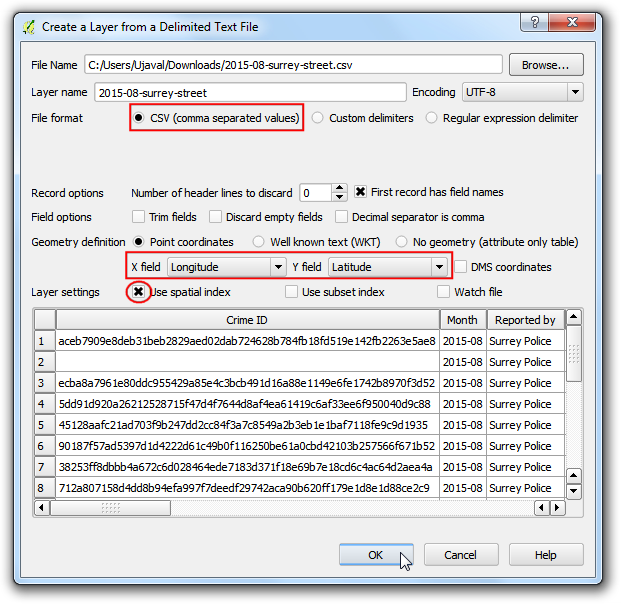
- You may see some errors. You can ignore those for the purpose of this
tutorials. Click Close.
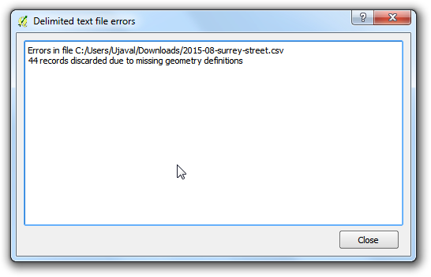
- As the data layer is loaded in QGIS, you will see a warning dialog
CRS was undefined: defaulting to CRS EPSG:4326 - WGS84. The CSV
importer assumes the CRS EPSG:4326 if your coordinates are in
Latitude/Longitude. If your X and Y coordinates were in a projected CRS, you
will get a dialog prompting you to choose the CRS. As our data is in
EPSG:4326, you can ignore the warning.
Примітка
If you need to change the automatically assigned CRS, you can use
.
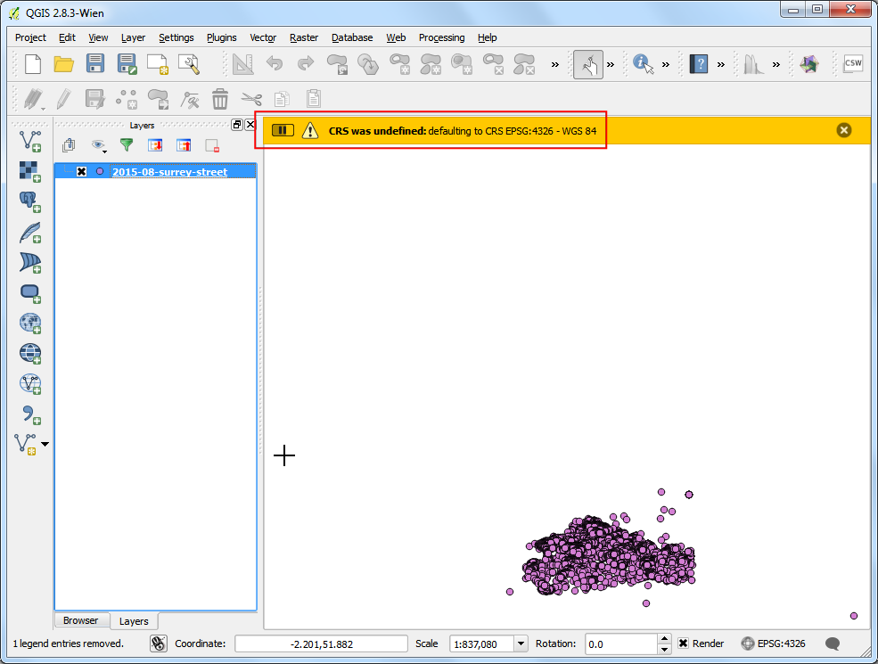
- Zoom-in a bit closer to get a better look at the data. You will notice that
the data is quite dense and it is hard to get an idea of where there is a
high concentration of points. This is where a heatmap will come in handy.
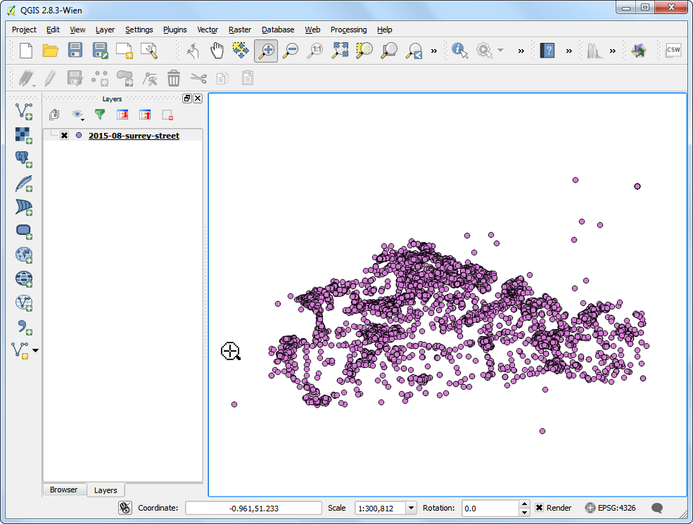
- If you need to create a heatmap for purely visual purpose or for printing -
QGIS has a built-in symbology renderer called Heatmap. Let’s try
that first. Right-click on the layer
2015-08-surrey-street and select
Properties.

- In the Properties dialog, switch to the Style tab.
Select Heatmap as the renderer. You have a lot of choice of
color-ramps for the heatmap. Choose the
Oranges color-ramp. Leave the
other parameters to default and click OK.
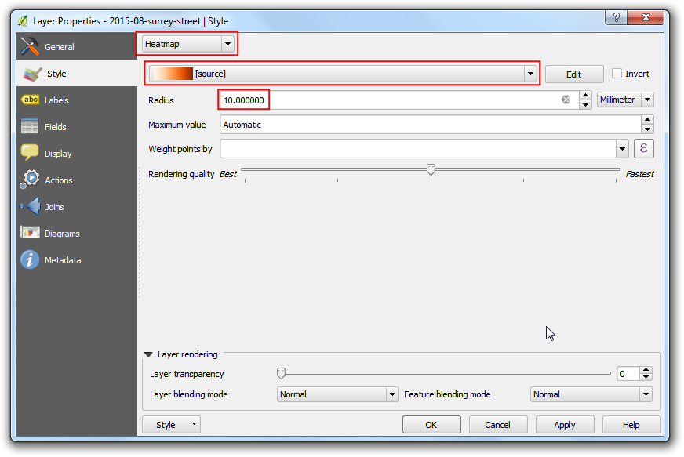
- You will see a nice heatmap of your data and pockets of heat where there
is a high concentration of crime. There are quite a few options available in
the heatmap renderer to create the most appropriate visualization for your
dataset. If you just wanted to create a heatmap for print or visual
inspection - you are done! But we will explore another more powerful heatmap
creation option where you can use the results in your analysis also.

- Enable a core plugin named
Heatmap. See Використання додатків to know how
to enable built-in plugins. Once you have enabled the plugin, go to
.
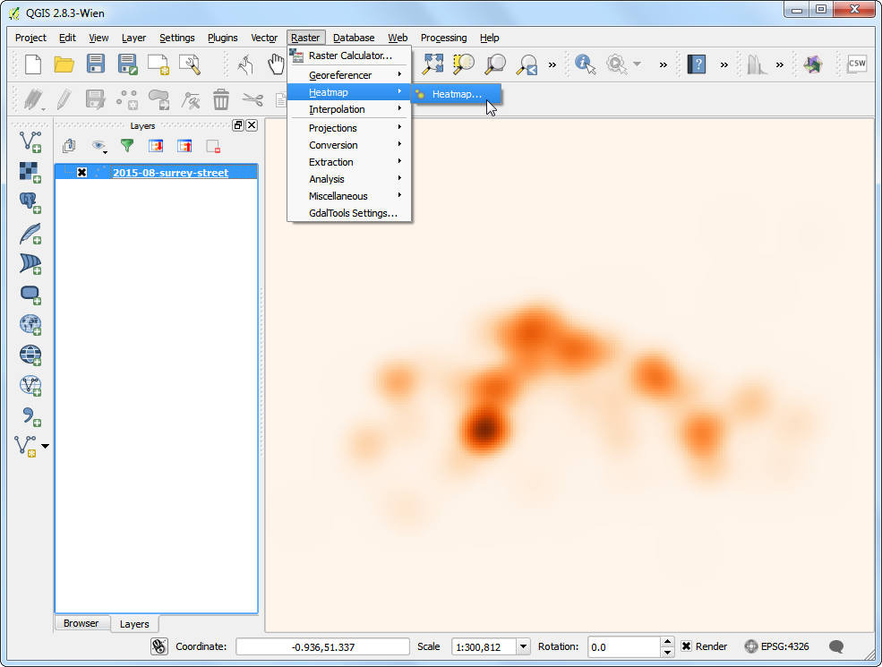
- In the Heatmap Plugin dialog, choose
crime_heatmap as the
name out the Output raster. Enter 1000 meters as the
Radius. Radius is the area around each point that will be used
to calculate the i`heat` a pixel received. Check the Advanced so
we can specify the output size of our heatmap. Enter 2000 as
Rows value. The Columns value will update
automatically. Click OK to start the heatmap creation process.

- Once the processing is finished, you will see a grayscale layer called
crime_heatmap loaded into the canvas. Uncheck the
2015-08-surrey-street layer.
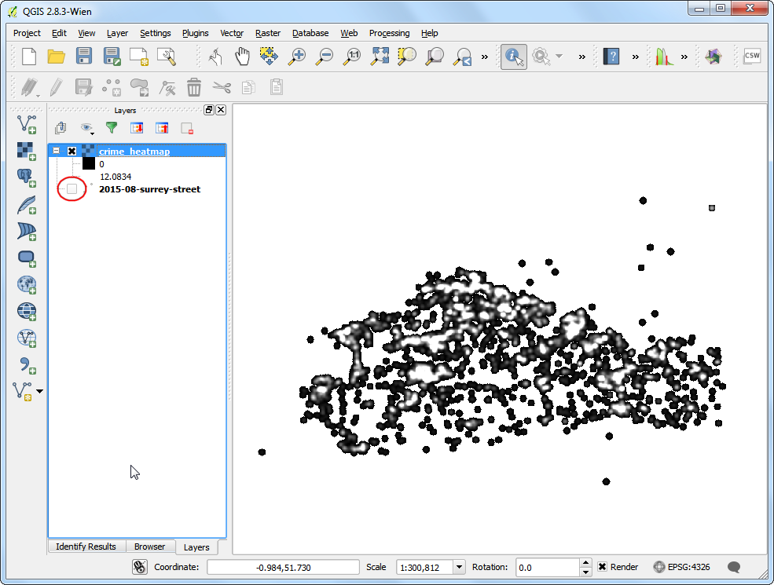
- Let’s make our heatmap look more like the traditional heatmap similar to
the earlier visualization. Right-click on the heatmap layer and click
Properties.
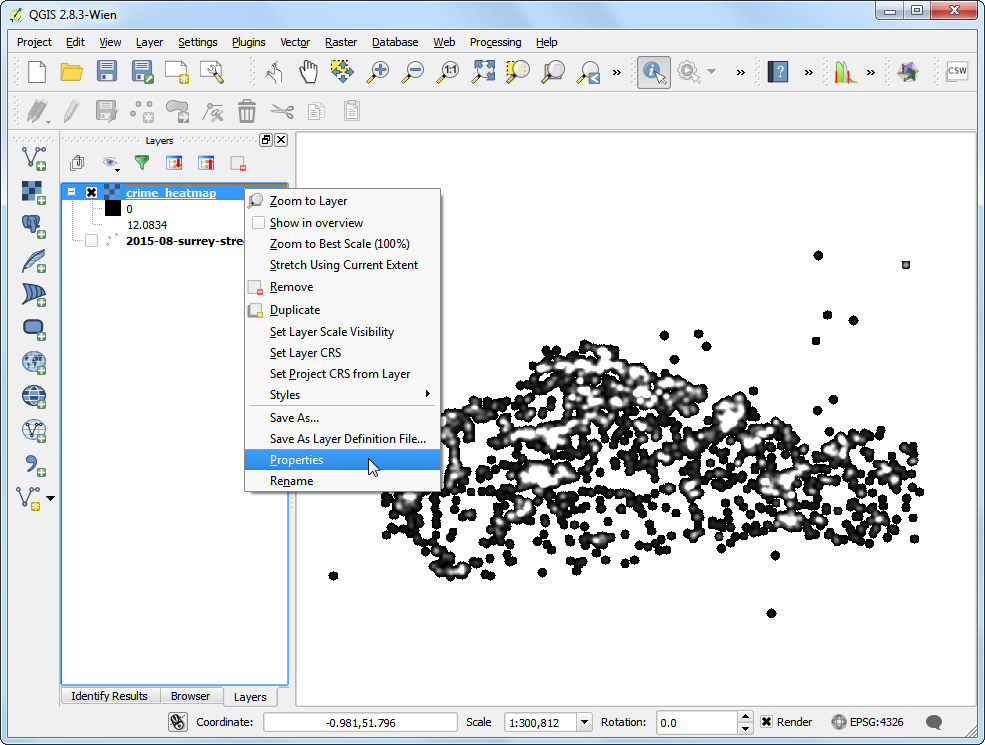
- In the Style tab, select Singleband pseudocolor as
the Render type. Next, under the section Load
min/max values, select the Estimate (faster) as the
Accuracy and click Load. This will scan the heatmap
and find the minimum and maximum pixel values. These values will be used to
generate an appropriate color ramp. In the section Generate new
color map, select YlOrRd (Yellow-Orange-Red) as the color
ramp, and click Classify. Click OK.
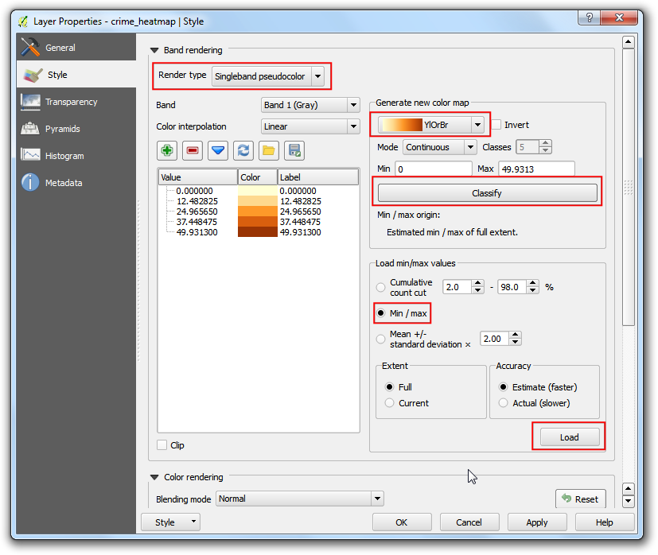
- Now you will see a more appealing heatmap-like rendering of the layer. You
can select the Identify tool and click on any pixel of the
heatmap. You will see the pixel value in the resulting pop-up. This
pixel-value is a measure of how many points from the source layer are
contained within the specified radius ( in our case - 1000m) around the
pixel.
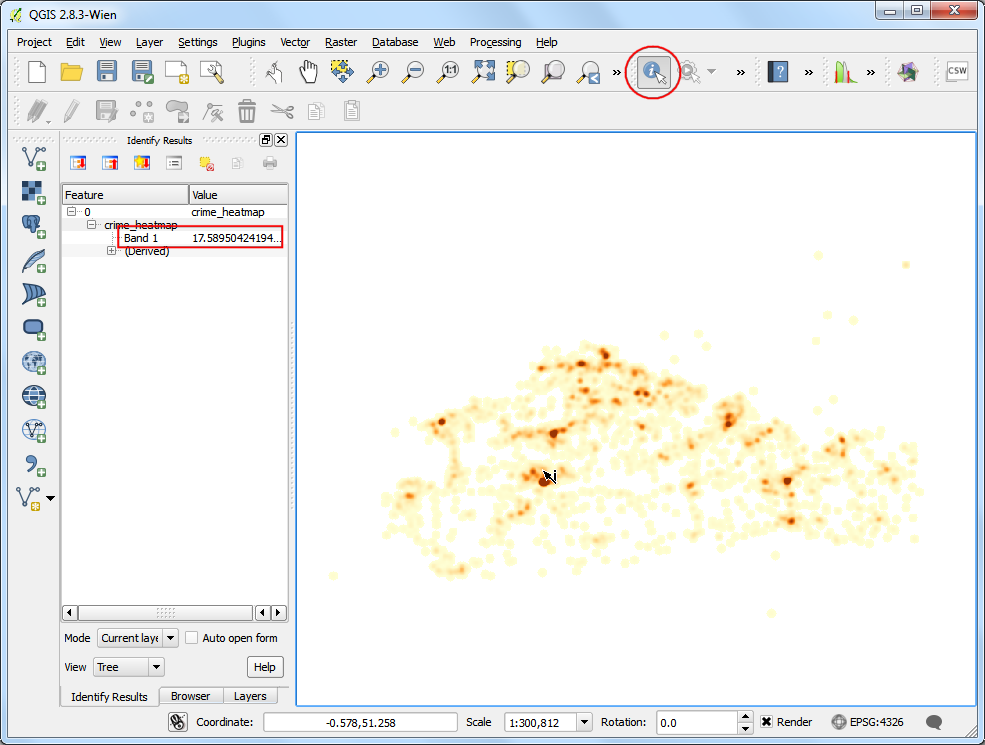
- Now you have your heatmap layer that can be saved for future use. Many
times, you want to identify the hotspots where there is
high-concentration of points. We will now try to identify such hotspots
using this heatmap. Go to .

- You will have to decide on a threshold value first. All pixel values above
that threshold will be considered to be in a cluster. Let’s use a value of
10 for this data. In Raster calculator dialog, name the
output layer as crime_hotspots_vector. Double-click on
crime_heatmap@1 under the Raster bands section and
it will be added to the Raster calculator expression textarea.
Complete the expression as shown below. Check the box next to
Add result to project and OK.
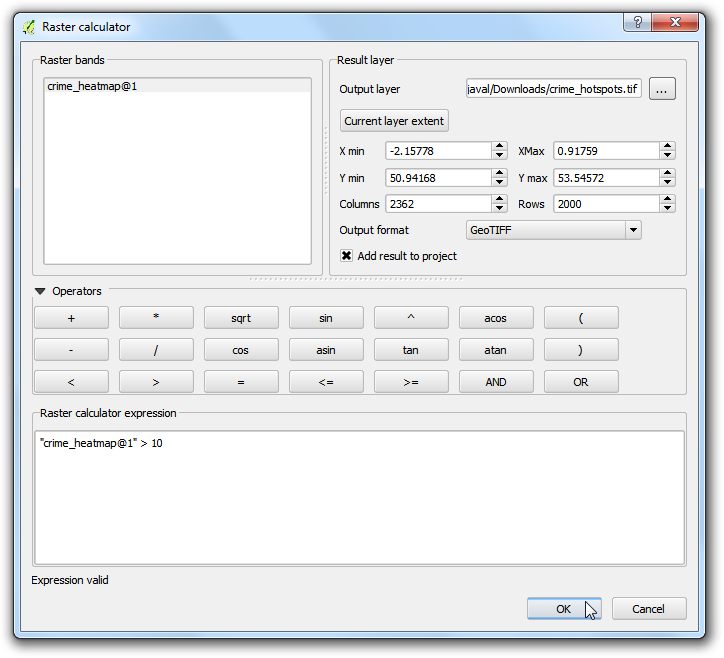
- A new layer called
crime_hotspots will be added to QGIS. This layer has
pixels with values of either 0 or 1. All pixels in the input layer where
the pixel value was larger than 10 now have a value of 1 and all
remianing pixels are 0. Click on .
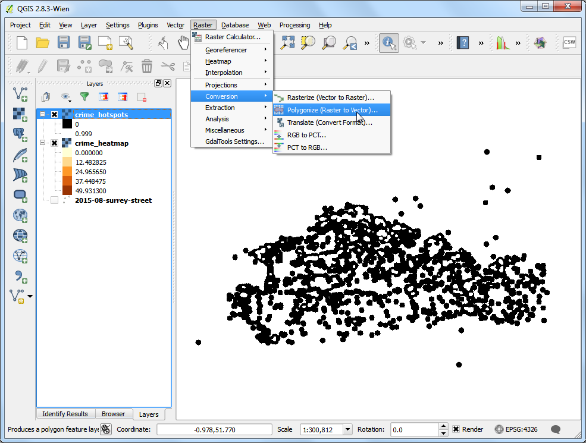
- Name the output file as
crime_hotspots_vector. Check the box
next to Field name as well as Load into canvas when
finished. Click OK.

- Once the conversion finishes, you will have yet another layer named
crime_hotspots_vector added to QGIS. This is the vector representation
of the clusters that were created in the previous step. The layers contain
clusters with both 0 and 1 values. Let’s filter out the 0 values, so we
get the clusters of hotspots. Right-click on the layer and select
Open Attribute Table.

- In the Attribute table, click on Select feature
using an expression.
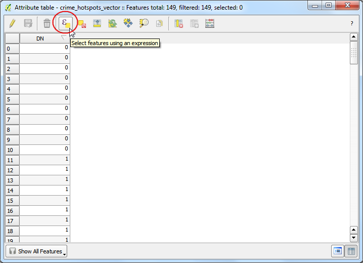
- Enter the expression as shown below and click Select. Next,
click on Close.

- In the main attribute table window, you will see some features highlighted.
These are the features that matched our query. Click the Toggle
editing mode button in the toolbar and then click the Delete
selected features (DEL) button.
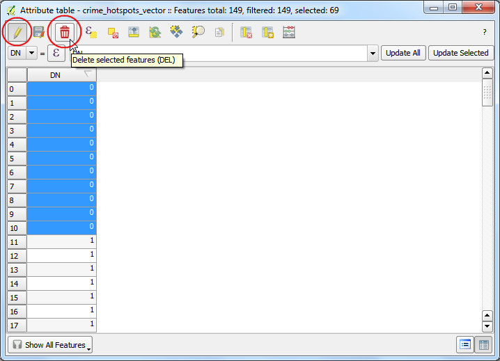
- Once the selected features are deleted, click the Save Edits
button and then Toggle editing mode again to put the layer in
read-only mode. Close the attribute table window.
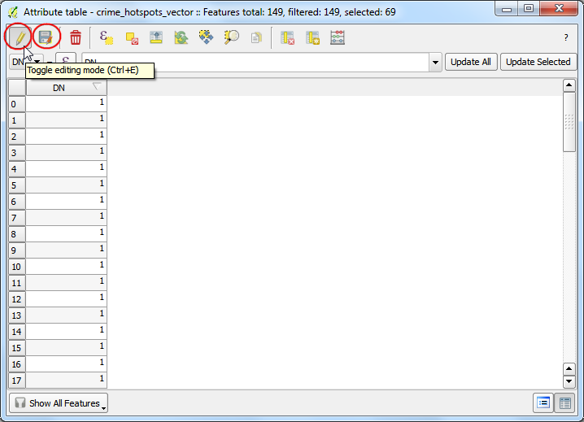
- In the main QGIS window, un-check the
crime_hotspots layer. The final
layer crime_hotspots_vector contains the cluster extracted from the
heatmap. These clusters are the intelligence gathered from the raw data
and can provide useful insights as well as serve as an input for further
action.
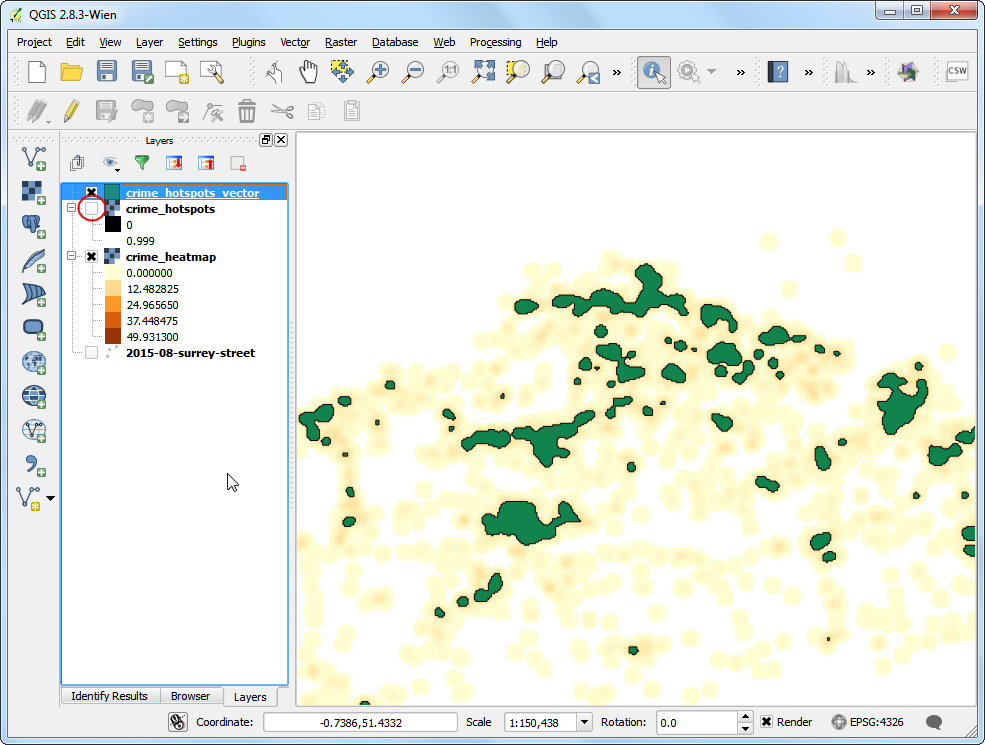